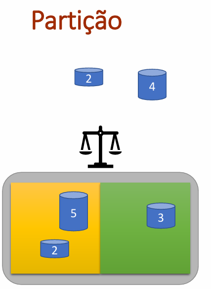

| TesteTVector | Aspirador 1 | Aspirador 2 | Puzzle 8 | 8 Damas | Partição | Artificial | 8 Damas CI | 8 Damas CP | Partição CB |
Execução de exemplo com base no problema da Partição. Pode acompanhar o teste executando as ações localmente.
No Visual Studio, selecione o projeto TProcuraConstrutiva, e execute. No Linux na pasta .../TProcura/Construtiva/Teste$ execute make seguido de ./bin/Release/TProcuraConstrutiva
Nota: ao executar no terminal, os parâmetros, indicadores e outros elementos, aparecem com realce de cor para facilitar a leitura.
Sumário
┌─ Teste TProcuraConstrutiva ──┐
│ 1 - Aspirador │
│ 2 - Puzzle 8 │
│ 3 - 8 Damas │
│ 4 - Partição │
│ 5 - Artificial │
└──────────────────────────────┘
Opção: 4

Partição - separe os números em duas partes iguais
Vamos escolher o problema da partição. Introduza: 4.
Partição
┌─ ⚙️ Parâmetros ─────────────────────────────────────────────────────
│ P1(ALGORITMO): Largura Primeiro | P2(NIVEL_DEBUG): NADA | P3(SEMENTE): 1
│ P4(LIMITE_TEMPO): 10 | P5(LIMITE_ITERACOES): 0 | P6(VER_ACOES): 4 | P7(LIMITE): 0
│ P8(ESTADOS_REPETIDOS): ignorar | P11(BARALHAR_SUCESSORES): 0
└──────────────────────────────────────────────────────────────────────
│ ├─ 📦1192 → ◀️0 = ▶️0 ─
┌─ ☰ Menu ────────┬────────────────┬─────────────────────┬──────────────┐
│ 1 ↻ Inicializar │ 2 🔍 Explorar │ 3 ⚙️ Parâmetros │ 4 ✔ Solução │
│ 5 ⚖ Indicadores │ 6 ► Executar │ 7 🛠️ Configurações │ 8 🧪 Teste │
└──────────────────┴────────────────┴─────────────────────┴──────────────┘
Opção:
Este problema consiste em dividir os números em duas partes que somem exatamente o mesmo valor. Está no modo compato, vamos colocar no modo extendido para ver o conteúdo da instância. Introduza: 3; 2; 4; ENTER.
Partição
┌─ ⚙️ Parâmetros ─────────────────────────────────────────────────────
│ P1(ALGORITMO): Largura Primeiro | P2(NIVEL_DEBUG): COMPLETO | P3(SEMENTE): 1
│ P4(LIMITE_TEMPO): 10 | P5(LIMITE_ITERACOES): 0 | P6(VER_ACOES): 4 | P7(LIMITE): 0
│ P8(ESTADOS_REPETIDOS): ignorar | P11(BARALHAR_SUCESSORES): 0
└──────────────────────────────────────────────────────────────────────
│ ┌─ 📦1192 → ◀️0 = ▶️0 ──────────────────────────────────────────────────
│ ├─ 📦 ─ 106 107 109 111 114 124 124 124 132 141
│ ├─ ◀️ ─
│ ├─ ▶️ ─
│ └──────────────────────────────────────────────────────────────────────
...
Opção:
Podemos agora ver os números a colocar. Somam no total 1192, e tem que se colocar cada número numa das linhas. A soma em cada linha tem de ser igual.
Ação 1 - Ver instâncias
Vamos ver as instâncias que temos. Introduza: 1; 10.
Opção: 1
┌─ ↻ Inicializar ─────────────────────────────────────────────────────
│ ID atual: 10 Intervalo: [2–1000]
│ Prefixo atual: 'instancia_'
└──────────────────────────────────────────────────────────────────────
Novo ID (ENTER mantém) ou novo prefixo (texto): 10
Existem instâncias de 2 a 1000, correspondendo o ID à quantidade de números. As instâncias são geradas aleatoriamente, podendo existir instâncias impossíveis.
Deixemos a instância 10 para resolução manual.
Ação 2 - Resolver manualmente
Vamos procurar resolver manualmente a intância. Introduza: 2; esq dir esq dir; dir esq dir esq; esq; dir.
Opção: 2
═╤═ 💰 g:0 🔢 1|2|3 ═══
│ ┌─ 📦1192 → ◀️0 = ▶️0 ──────────────────────────────────────────────────
│ ├─ 📦 ─ 106 107 109 111 114 124 124 124 132 141
│ ├─ ◀️ ─
│ ├─ ▶️ ─
│ └──────────────────────────────────────────────────────────────────────
│ └─ ⚡ ───── esq dir { 🔖1 🔖2 }
🔍 Sucessor [1-2, ação(ões), exe]: esq dir esq dir
┌─ ✅ Sucesso ────────
│ Executadas 4 ações.
└─────────────────────
═╤═ 💰 g:0 🔢 6|12|6 ═══
│ ┌─ 📦671 → ◀️265 = ▶️256 ───────────────────────────────────────────────
│ ├─ 📦 ─ 106 107 109 111 114 124
│ ├─ ◀️ ─ 141 124
│ ├─ ▶️ ─ 132 124
│ └──────────────────────────────────────────────────────────────────────
│ └─ ⚡ ───── esq dir { 🔖11 🔖12 }
🔍 Sucessor [1-2, ação(ões), exe]: dir esq dir esq
┌─ ✅ Sucesso ────────
│ Executadas 4 ações.
└─────────────────────
═╤═ 💰 g:0 🔢 11|22|9 ═══
│ ┌─ 📦213 → ◀️488 = ▶️491 ───────────────────────────────────────────────
│ ├─ 📦 ─ 106 107
│ ├─ ◀️ ─ 141 124 114 109
│ ├─ ▶️ ─ 132 124 124 111
│ └──────────────────────────────────────────────────────────────────────
│ └─ ⚡ ───── esq dir { 🔖21 🔖22 }
🔍 Sucessor [1-2, ação(ões), exe]: esq
┌─ ✅ Sucesso ────────
│ Executadas 1 ações.
└─────────────────────
═╤═ 💰 g:0 🔢 13|26|12 ═══
│ ┌─ 📦106 → ◀️595 = ▶️491 ───────────────────────────────────────────────
│ ├─ 📦 ─ 106
│ ├─ ◀️ ─ 141 124 114 109 107
│ ├─ ▶️ ─ 132 124 124 111
│ └──────────────────────────────────────────────────────────────────────
│ └─ ⚡ ───── esq dir { 🔖25 🔖26 }
🔍 Sucessor [1-2, ação(ões), exe]: dir
┌─ ✅ Sucesso ────────
│ Executadas 1 ações.
└─────────────────────
═╤═ 💰 g:0 🔢 15|28|13 ═══
│ ┌─ 📦0 → ◀️595 = ▶️597 ─────────────────────────────────────────────────
│ ├─ 📦 ─
│ ├─ ◀️ ─ 141 124 114 109 107
│ ├─ ▶️ ─ 132 124 124 111 106
│ └──────────────────────────────────────────────────────────────────────
│ └─ ⚡ ─────
┌─ ℹ️ Informação ───
│ Sem sucessores.
└────────────────────
Partição
┌─ ⚙️ Parâmetros ─────────────────────────────────────────────────────
│ P1(ALGORITMO): Largura Primeiro | P2(NIVEL_DEBUG): COMPLETO | P3(SEMENTE): 1
│ P4(LIMITE_TEMPO): 10 | P5(LIMITE_ITERACOES): 0 | P6(VER_ACOES): 4 | P7(LIMITE): 0
│ P8(ESTADOS_REPETIDOS): ignorar | P11(BARALHAR_SUCESSORES): 0
└──────────────────────────────────────────────────────────────────────
│ ┌─ 📦0 → ◀️595 = ▶️597 ─────────────────────────────────────────────────
│ ├─ 📦 ─
│ ├─ ◀️ ─ 141 124 114 109 107
│ ├─ ▶️ ─ 132 124 124 111 106
│ └──────────────────────────────────────────────────────────────────────
...
Opção:
Foi uma boa tentativa, mas no final um lado soma 595 do outro 597.
Tal como as 8 damas, o número de ações de uma solução completa é fixo. É igual à quantidade de número a colocar. Sabemos que não faz sentido a procura em largura nestes problemas. Também pelos mesmos motivos que nas 8 damas, não se consegue uma heurística pelo que não faz sentido as procuras informadas.
Naturalmente que se poderia efetuar mais cortes dos que estão a ser feitos nesta implementação. Vamos apenas comparar a remoção de repetidos gerados, relativamente a ignorar repetidos.
No caso da partição, após um número estar num lado, apenas a soma interessa. Como se coloca os números por ordem, um estado fica igual a todos os que têm o montante igual das peças colocadas. Esquerda e direita é naturalmente irrelevante.
Como o estado codificado fica pequeno, a expectativa para ganho por repetidos aumenta.
Ação 3 - Testes Empíricos
Vamos fazer testes empíricos na linha de comandos.
Vamos obter primeiramente a lista de todos os parâmetros.
/TProcura/Construtiva/Teste$ ./bin/Release/TProcuraConstrutiva -h
┌─ Teste TProcuraConstrutiva ──┐
│ 1 - Aspirador │
│ 2 - Puzzle 8 │
│ 3 - 8 Damas │
│ 4 - Partição │
│ 5 - Artificial │
└──────────────────────────────┘
Opção: 4
Uso: ./bin/Release/TProcuraConstrutiva <instâncias> [opções]
<instâncias> Conjunto de IDs: A | A,B,C | A:B[:C]
Opções:
-R <ficheiro> Nome do CSV de resultados (omissão: resultados.csv)
-F <prefixo> Prefixo dos ficheiros de instância (omissão: instancia_)
-M <modo> Modo MPI: 0 = divisão estática, 1 = gestor-trabalhador
-I <ind> Lista de indicadores (e.g. 2,1,3)
-h Esta ajuda
-P <expr> Parâmetros (e.g. P1=1:3 x P2=0:2) - último campo
Exemplo: ./bin/Release/TProcuraConstrutiva 1:5 -R out -F fich_ -I 3,1,4,2 -P P1=1:5 x P6=1,2
Executar sem argumentos entra em modo interativo, para explorar todos os parametros e indicadores
Lista de parâmetros:
┌─ ⚙️ Parâmetros ─────────────────────────────────────────────────────
│ P1(ALGORITMO): Largura Primeiro ( 1 a 7)
│ P2(NIVEL_DEBUG): NADA ( 0 a 4)
│ P3(SEMENTE): 1 ( 1 a 1000000)
│ P4(LIMITE_TEMPO): 10 ( 1 a 3600)
│ P5(LIMITE_ITERACOES): 0 ( 0 a 1000000000)
│ P6(VER_ACOES): 4 ( 1 a 100)
│ P7(LIMITE): 0 (-1 a 1000000)
│ P8(ESTADOS_REPETIDOS): ignorar ( 1 a 3)
│ P11(BARALHAR_SUCESSORES): 0 ( 0 a 1)
└──────────────────────────────────────────────────────────────────────
Lista de indicadores:
┌─ ⚖ Indicadores ─────────────────────────────────────────────────────
│ I1(IND_CUSTO): ✔ 1º lugar
│ o resultado é o custo da solução atual
│ I2(Tempo(ms)): ✔ 2º lugar
│ Tempo em milisegundos da execução (medida de esforço computacional).
│ I3(Iterações): ✔ 3º lugar
│ Iterações do algoritmo, intrepretadas conforme o algoritmo (medida de esforço independente do hardware).
│ I4(IND_EXPANSOES): ✔ 4º lugar
│ número de expansões efetuadas
│ I5(IND_GERACOES): ✔ 5º lugar
│ número de estados gerados
│ I6(IND_LOWER_BOUND): ✔ 6º lugar
│ valor mínimo para a melhor solução, se igual ao custo da solução obtida, então esta é ótima
└──────────────────────────────────────────────────────────────────────
Temos para teste a procura em profundidade ilimitada, e pretendemos comparar ignorar estados repetidos, ou remover todos os repetidos gerados.
PS ...\Teste> TProcuraConstrutiva 10:19 -R Resultados/Particaot1 -P P2=3 P7=-1 P1=3 P8=1,3
...
Opção: 4
├─ 🛠️ ─ P1=3 P2=3 P3=1 P4=10 P5=0 P6=4 P7=-1 P11=0 (parâmetros comuns)
═╪═ Configurações ═══
├─ ⚙️ [1] ─ P8=1
├─ ⚙️ [2] ─ P8=3
═╧═══════════════════
═╤═ 🧪 Início do Teste (🖥️ 0) ═══
├─ 📋 Tarefas:20 ↻ Instâncias: 10 🛠️ Configurações: 2 🖥️ Processos: 1.
├─ 📄 Ficheiro Resultados/Particaot1.csv gravado.
│ ⏱ Tempo real: 263ms
│ ⏱ CPU total: 263ms
│ 📊 Utilização: 100.0%
═╧═ 🏁 Fim do Teste (🖥️ 0 ⏱ 263ms ) ═══
Podemos ver o resultado:
| Rótulos de Linha | Soma de I1(Custo)
1:ignorar | 3:gerados | Soma de I2(Tempo(ms))
1:ignorar | 3:gerados | Soma de I4(Expansões)
1:ignorar | 3:gerados |
| 10 | 10 | 10 | 0 | 7 | 243 | 125 |
| 11 | -1 | -1 | 1 | 3 | 1847 | 429 |
| 12 | 12 | 12 | 0 | 4 | 638 | 428 |
| 13 | -1 | -1 | 3 | 5 | 6863 | 729 |
| 14 | 14 | 14 | 0 | 3 | 869 | 363 |
| 15 | -1 | -1 | 11 | 8 | 25739 | 1783 |
| 16 | 16 | 16 | 2 | 7 | 3806 | 1115 |
| 17 | -1 | -1 | 40 | 10 | 97239 | 2944 |
| 18 | 18 | 18 | 6 | 7 | 15797 | 1898 |
| 19 | -1 | -1 | 134 | 10 | 369511 | 4180 |
| Total Geral | 65 | 65 | 197 | 64 | 522552 | 13994 |
As instâncias escolhidas são muito pequenas, e o tempo de execução é praticamente nulo. Não servem para medir diferenças de tempo. Podemos no entanto observar diferenças nas expansões, devido a remoção de repetidos gerados. Os resultados são iguais, sendo as instãncias ímpares neste caso todas impossíveis. Vê-se também uma tendência para as instâncias impossíveis serem mais complexas que instâncias de dimensão idêntica mas pares. Este efeito deve-se à forma como as instâncias são geradas. Procurou-se instâncias com dificuldade razoável (ver CParticao::Inicializar()).
Vamos procurar instâncias maiores, como não sabemos a dimensão, vamos escolher algumas de dimensões distintas.
PS ...\Teste> TProcuraConstrutiva 20:28:2,30:95:5 -R Resultados/Particaot2 -P P2=3 P7=-1 P1=3 P8=1,3
...
Opção: 4
├─ 🛠️ ─ P1=3 P2=3 P3=1 P4=10 P5=0 P6=4 P7=-1 P11=0 (parâmetros comuns)
═╪═ Configurações ═══
├─ ⚙️ [1] ─ P8=1
├─ ⚙️ [2] ─ P8=3
═╧═══════════════════
═╤═ 🧪 Início do Teste (🖥️ 0) ═══
├─ 📋 Tarefas:38 ↻ Instâncias: 19 🛠️ Configurações: 2 🖥️ Processos: 1.
├─ ⏱ 11" 988ms 📋 7 ↻ 40 🛠️ 0 🖥️ 1
├─ ⏱ 21" 988ms 📋 8 ↻ 45 🛠️ 0 🖥️ 1
├─ ⏱ 31" 988ms 📋 9 ↻ 50 🛠️ 0 🖥️ 1
├─ ⏱ 41" 988ms 📋 10 ↻ 55 🛠️ 0 🖥️ 1
├─ ⏱ 51" 988ms 📋 11 ↻ 60 🛠️ 0 🖥️ 1
├─ ⏱ 1' 1" 989ms 📋 12 ↻ 65 🛠️ 0 🖥️ 1
├─ ⏱ 1' 11" 989ms 📋 13 ↻ 70 🛠️ 0 🖥️ 1
├─ ⏱ 1' 21" 989ms 📋 14 ↻ 75 🛠️ 0 🖥️ 1
├─ ⏱ 1' 31" 990ms 📋 16 ↻ 85 🛠️ 0 🖥️ 1
├─ ⏱ 1' 41" 991ms 📋 17 ↻ 90 🛠️ 0 🖥️ 1
├─ ⏱ 1' 51" 991ms 📋 18 ↻ 95 🛠️ 0 🖥️ 1
├─ ⏱ 2' 1" 991ms 📋 19 ↻ 20 🛠️ 1 🖥️ 1
│ HT: utilização 83%, reuso: 2.84 vezes
├─ 📄 Ficheiro Resultados/Particaot2.csv gravado.
│ ⏱ Tempo real: 2' 17" 389ms
│ ⏱ CPU total: 2' 17" 389ms
│ 📊 Utilização: 100.0%
═╧═ 🏁 Fim do Teste (🖥️ 0 ⏱ 2' 17" 389ms ) ═══
A execução já levou algum tempo, e podemos ver logo pelos logs que a primeira configuração levou a maior parte do tempo do teste.
Vendo os resultados podemos observar o seguinte:
| Rótulos de Linha | Soma de I1(Custo)
1:ignorar | 3:gerados | Soma de I2(Tempo(ms))
1:ignorar | 3:gerados | Soma de I4(Expansões)
1:ignorar | 3:gerados |
| 20 | 20 | 20 | 12 | 18 | 23610 | 3269 |
| 22 | 22 | 22 | 31 | 14 | 77893 | 4189 |
| 24 | 24 | 24 | 43 | 11 | 115952 | 4111 |
| 26 | 26 | 26 | 29 | 11 | 77455 | 5332 |
| 28 | 28 | 28 | 400 | 17 | 931768 | 11940 |
| 30 | 30 | 30 | 1475 | 14 | 3749717 | 14965 |
| 35 | -2 | -1 | 10000 | 38 | 24405221 | 51640 |
| 40 | -2 | 40 | 10000 | 22 | 24323660 | 29024 |
| 45 | -2 | -1 | 10000 | 101 | 24130447 | 140149 |
| 50 | -2 | 50 | 10000 | 81 | 23499504 | 113967 |
| 55 | -2 | -1 | 10000 | 234 | 23340760 | 310970 |
| 60 | -2 | 60 | 10000 | 138 | 22142589 | 186637 |
| 65 | -2 | -1 | 10000 | 521 | 22068193 | 656716 |
| 70 | -2 | 70 | 10000 | 451 | 21475418 | 564437 |
| 75 | 75 | 75 | 1 | 11 | 1689 | 1379 |
| 80 | -2 | 80 | 10000 | 538 | 20846860 | 668117 |
| 85 | -2 | -1 | 10000 | 2035 | 21114253 | 2359882 |
| 90 | -2 | 90 | 10000 | 1139 | 20373522 | 1385061 |
| 95 | -2 | -2 | 10000 | 10000 | 19984106 | 10853664 |
| Total Geral | 201 | 608 | 121991 | 15394 | 272682617 | 17365449 |
É agora claro que a remoção de repetidos gerados permite resolver mais instãncias, apenas não resolveu a instância 95. Já ignorando os estados gerados, logo a instância 35 não é resolvida.
Ignorar estados gerados apenas trás vantagem em instâncias simples, como a 75 que acabou por ser simples, apesar do tamanho, a geração dos números saiu de simples verificação.
No geral, nas instâncisa complexas e resolvidas por ambos os métodos, como a instância 30, podemos observar nos estados expandidos, mais que uma ordem de grandeza ao ignorar os estados repetidos.
O custo da utilização dos estados repetidos, é também visivel na instância 95, que não foi resolvida, pelo que medimos o número de estados expandidos em 10 segundos. Ignorando os estados repetidos, há cerca do doubro do número de expansões. Como o que se consegue poupar no caso da instância ser resolvida, como é o caso da instância 30, é francamente superior, é aconselhada a utilização deteção de estados removidos para este problema, com instâncias desta complexidade.
Qual é a maior instância que se conseguimos resolver com esta implemantação?
Resposta:
Temos a primeira instância não resolvida a 95, mas é uma instância ímpar. A pergunta é a maior que se consegue resolver, não a menor não resolvida. Vamos usar apenas a remoção de repetidos e instâncias pares, começando do 100 para cima.
PS ...\Teste> TProcuraConstrutiva 100:200:10 -R Resultados/Particaot3 -P P2=4 P7=-1 P1=3 P8=3
...
Opção: 4
├─ 🛠️ ─ P1=3 P2=4 P3=1 P4=10 P5=0 P6=4 P7=-1 P8=3 P11=0 (parâmetros comuns)
═╪═ Configurações ═══
├─ ⚙️ [1] ─
═╧═══════════════════
═╤═ 🧪 Início do Teste (🖥️ 0) ═══
├─ 📋 Tarefas:11 ↻ Instâncias: 11 🛠️ Configurações: 1 🖥️ Processos: 1.
├─ ⏱ 📋 0 ↻ 100 🛠️ 0 🖥️ 1 🎯 100 ⚖ 100 1767 0 1965887 1965936 0
├─ ⏱ 1" 767ms 📋 1 ↻ 110 🛠️ 0 🖥️ 1
│ HT: utilização 81%, reuso: 2.40 vezes🎯 110 ⚖ 110 7599 0 8021662 8021716 0
├─ ⏱ 9" 367ms 📋 2 ↻ 120 🛠️ 0 🖥️ 1
│ HT: utilização 91%, reuso: 8.81 vezes🚫 ⏱ ⚖ -2 10000 0 10986702 10986745 0
├─ ⏱ 19" 367ms 📋 3 ↻ 130 🛠️ 0 🖥️ 1
│ HT: utilização 91%, reuso: 12.02 vezes🚫 ⏱ ⚖ -2 10000 0 10976665 10976708 0
├─ ⏱ 29" 367ms 📋 4 ↻ 140 🛠️ 0 🖥️ 1
│ HT: utilização 91%, reuso: 11.94 vezes🚫 ⏱ ⚖ -2 10000 0 10819628 10819686 0
├─ ⏱ 39" 367ms 📋 5 ↻ 150 🛠️ 0 🖥️ 1
│ HT: utilização 92%, reuso: 11.64 vezes🚫 ⏱ ⚖ -2 10000 0 10922020 10922083 0
├─ ⏱ 49" 367ms 📋 6 ↻ 160 🛠️ 0 🖥️ 1
│ HT: utilização 93%, reuso: 11.70 vezes🚫 ⏱ ⚖ -2 10000 0 10808340 10808408 0
├─ ⏱ 59" 367ms 📋 7 ↻ 170 🛠️ 0 🖥️ 1
│ HT: utilização 94%, reuso: 11.40 vezes🚫 ⏱ ⚖ -2 10000 0 10915082 10915158 0
├─ ⏱ 1' 9" 367ms 📋 8 ↻ 180 🛠️ 0 🖥️ 1
│ HT: utilização 93%, reuso: 11.66 vezes🚫 ⏱ ⚖ -2 10000 0 10928977 10929061 0
├─ ⏱ 1' 19" 367ms 📋 9 ↻ 190 🛠️ 0 🖥️ 1
│ HT: utilização 94%, reuso: 11.60 vezes🚫 ⏱ ⚖ -2 10000 0 10789770 10789851 0
├─ ⏱ 1' 29" 367ms 📋 10 ↻ 200 🛠️ 0 🖥️ 1
│ HT: utilização 94%, reuso: 11.41 vezes🚫 ⏱ ⚖ -2 10000 0 10530202 10530292 0
├─ 📄 Ficheiro Resultados/Particaot3.csv gravado.
│ ⏱ Tempo real: 1' 39" 368ms
│ ⏱ CPU total: 1' 39" 368ms
│ 📊 Utilização: 100.0%
═╧═ 🏁 Fim do Teste (🖥️ 0 ⏱ 1' 39" 368ms ) ═══
| Rótulos de Linha | Soma de I1(IND_CUSTO) | Soma de I2(Tempo(ms)) | Soma de I4(IND_EXPANSOES) |
| 100 | 100 | 1767 | 1965887 |
| 110 | 110 | 7599 | 8021662 |
| 120 | -2 | 10000 | 10986702 |
| 130 | -2 | 10000 | 10976665 |
| 140 | -2 | 10000 | 10819628 |
| 150 | -2 | 10000 | 10922020 |
| 160 | -2 | 10000 | 10808340 |
| 170 | -2 | 10000 | 10915082 |
| 180 | -2 | 10000 | 10928977 |
| 190 | -2 | 10000 | 10789770 |
| 200 | -2 | 10000 | 10530202 |
| Total Geral | 192 | 99366 | 107664935 |
Conseguimos resolver a instância 110, mas não as seguintes, no limite de 10 segundos.
Podemos ver agora a maior instância impossível que se consegue resolver, apontando às instâncias ímpares, onde há mais instâncias impossíveis, de modo a dar resposta também nas instâncias impossíveis.
PS ...\Teste> TProcuraConstrutiva 91:121:2 -R Resultados/Particaot4 -P P2=4 P7=-1 P1=3 P8=3
Opção: 4
├─ 🛠️ ─ P1=3 P2=4 P3=1 P4=10 P5=0 P6=4 P7=-1 P8=3 P11=0 (parâmetros comuns)
═╪═ Configurações ═══
├─ ⚙️ [1] ─
═╧═══════════════════
═╤═ 🧪 Início do Teste (🖥️ 0) ═══
├─ 📋 Tarefas:16 ↻ Instâncias: 16 🛠️ Configurações: 1 🖥️ Processos: 1.
├─ ⏱ 📋 0 ↻ 91 🛠️ 0 🖥️ 1 🚫 ⏱ ⚖ -2 10000 0 11018914 11018935 0
├─ ⏱ 10" 📋 1 ↻ 93 🛠️ 0 🖥️ 1
│ HT: utilização 90%, reuso: 12.18 vezes🚫 ⏱ ⚖ -2 10000 0 10797609 10797637 0
├─ ⏱ 20" 📋 2 ↻ 95 🛠️ 0 🖥️ 1
│ HT: utilização 88%, reuso: 12.16 vezes🚫 ⏱ ⚖ -2 10000 0 10906864 10906888 0
├─ ⏱ 30" 📋 3 ↻ 97 🛠️ 0 🖥️ 1
│ HT: utilização 89%, reuso: 12.25 vezes🎯 97 ⚖ 97 7 0 3811 3858 0
├─ ⏱ 30" 7ms 📋 4 ↻ 99 🛠️ 0 🖥️ 1 🚫 ⏱ ⚖ -2 10000 0 11097357 11097380 0
├─ ⏱ 40" 7ms 📋 5 ↻ 101 🛠️ 0 🖥️ 1
│ HT: utilização 90%, reuso: 12.29 vezes🚫 ⏱ ⚖ -2 10000 0 11100893 11100930 0
├─ ⏱ 50" 7ms 📋 6 ↻ 103 🛠️ 0 🖥️ 1
│ HT: utilização 90%, reuso: 12.26 vezes🎯 103 ⚖ 103 7 0 4231 4281 0
├─ ⏱ 50" 14ms 📋 7 ↻ 105 🛠️ 0 🖥️ 1 🚫 ⏱ ⚖ -2 10000 0 10917963 10918004 0
├─ ⏱ 1' 14ms 📋 8 ↻ 107 🛠️ 0 🖥️ 1
│ HT: utilização 89%, reuso: 12.15 vezes🚫 ⏱ ⚖ -2 10000 0 11160222 11160260 0
├─ ⏱ 1' 10" 14ms 📋 9 ↻ 109 🛠️ 0 🖥️ 1
│ HT: utilização 90%, reuso: 12.34 vezes🚫 ⏱ ⚖ -2 10000 0 11127184 11127228 0
├─ ⏱ 1' 20" 14ms 📋 10 ↻ 111 🛠️ 0 🖥️ 1
│ HT: utilização 91%, reuso: 12.22 vezes🎯 111 ⚖ 111 4 0 167 221 0
├─ ⏱ 1' 20" 18ms 📋 11 ↻ 113 🛠️ 0 🖥️ 1 🎯 113 ⚖ 113 4 0 1186 1241 0
├─ ⏱ 1' 20" 23ms 📋 12 ↻ 115 🛠️ 0 🖥️ 1 🎯 115 ⚖ 115 3 0 173 229 0
├─ ⏱ 1' 20" 26ms 📋 13 ↻ 117 🛠️ 0 🖥️ 1 🎯 117 ⚖ 117 4 0 1069 1126 0
├─ ⏱ 1' 20" 30ms 📋 14 ↻ 119 🛠️ 0 🖥️ 1 🚫 ⏱ ⚖ -2 10000 0 10863000 10863039 0
├─ ⏱ 1' 30" 30ms 📋 15 ↻ 121 🛠️ 0 🖥️ 1
│ HT: utilização 91%, reuso: 11.89 vezes🎯 121 ⚖ 121 5 0 1886 1945 0
├─ 📄 Ficheiro Resultados/Particaot4.csv gravado.
│ ⏱ Tempo real: 1' 30" 36ms
│ ⏱ CPU total: 1' 30" 36ms
│ 📊 Utilização: 100.0%
═╧═ 🏁 Fim do Teste (🖥️ 0 ⏱ 1' 30" 36ms ) ═══
Podemos ver os resultados:
| Rótulos de Linha | Soma de I1(IND_CUSTO) | Soma de I2(Tempo(ms)) | Soma de I4(IND_EXPANSOES) |
| 91 | -2 | 10000 | 11018914 |
| 93 | -2 | 10000 | 10797609 |
| 95 | -2 | 10000 | 10906864 |
| 97 | 97 | 7 | 3811 |
| 99 | -2 | 10000 | 11097357 |
| 101 | -2 | 10000 | 11100893 |
| 103 | 103 | 7 | 4231 |
| 105 | -2 | 10000 | 10917963 |
| 107 | -2 | 10000 | 11160222 |
| 109 | -2 | 10000 | 11127184 |
| 111 | 111 | 4 | 167 |
| 113 | 113 | 4 | 1186 |
| 115 | 115 | 3 | 173 |
| 117 | 117 | 4 | 1069 |
| 119 | -2 | 10000 | 10863000 |
| 121 | 121 | 5 | 1886 |
Devido ao método de geração de instâncias, parte destas instâncias ímpares é muito simples, mas no geral, sendo impossíveis, Nesta amplitude é muito complexo provar que uma instância é impossível.
A maior instância impossível resolvida foi portanto no texto t2, a instância 85, sendo utilizadas 2 359 882 expansões.
Naturalmente que com outra semente aleatória, iriamos ter instâncias diferentes.
| TesteTVector | Aspirador 1 | Aspirador 2 | Puzzle 8 | 8 Damas | Partição | Artificial | 8 Damas CI | 8 Damas CP | Partição CB |
 1.9.8
1.9.8